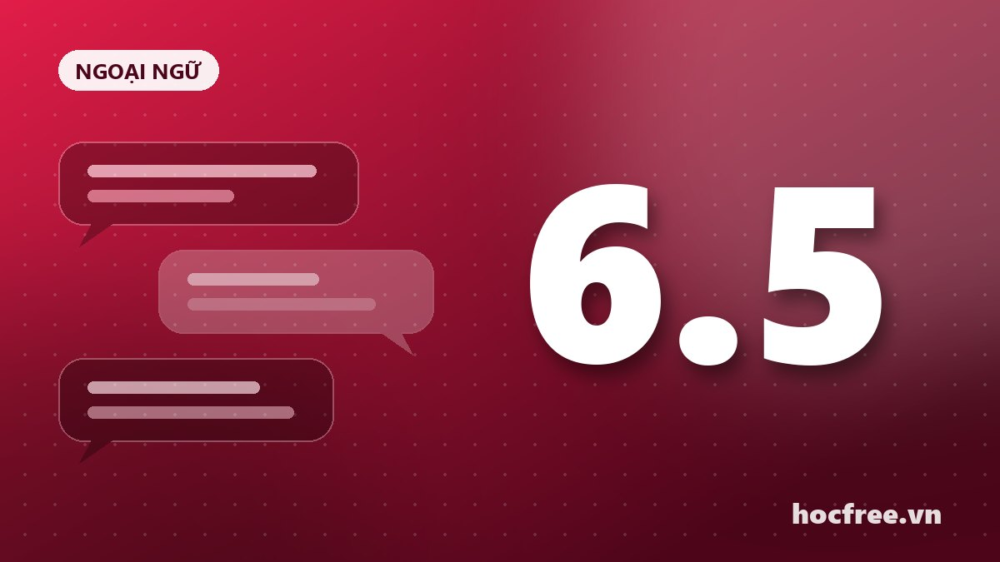

Lộ trình tự học IELTS 6.5 trong 6 tháng cho người đi làm
Không cần trung tâm đắt đỏ, bạn vẫn có thể đạt IELTS 6.5 nếu có lộ trình rõ ràng. Kế hoạch chi tiết theo từng tháng và tài liệu miễn phí.

Nội dung bài viết
IELTS 6.5 là mức điểm phổ biến để xét tốt nghiệp, du học hoặc xin việc ở các công ty nước ngoài. Với người đi làm chỉ có khoảng 1,5 đến 2 giờ mỗi ngày, 6 tháng là khoảng thời gian hợp lý nếu bạn bắt đầu từ trình độ khoảng 4.5–5.0. Dưới đây là lộ trình mà nhiều người tự học đã áp dụng thành công.
Trước khi bắt đầu: kiểm tra trình độ
Làm một bài thi thử đầy đủ 4 kỹ năng (có thể dùng sách Cambridge IELTS) để biết điểm xuất phát. Ghi lại điểm từng kỹ năng, vì đây là cơ sở để phân bổ thời gian hợp lý.
Tháng 1–2: Xây nền tảng
- Từ vựng: học 15–20 từ mỗi ngày theo chủ đề (giáo dục, môi trường, công nghệ, sức khỏe…), ôn bằng Anki.
- Ngữ pháp: ôn lại các thì, câu điều kiện, mệnh đề quan hệ, câu bị động. Đây là nền móng cho Writing và Speaking.
- Nghe: nghe podcast tiếng Anh chậm (như 6 Minute English của BBC) mỗi ngày 20 phút.
- Phát âm: học bảng phiên âm IPA, luyện theo phương pháp Shadowing.
Tháng 3–4: Làm quen dạng đề
- Listening: luyện từng Section, chú ý bẫy đổi đáp án và lỗi chính tả.
- Reading: học kỹ năng skimming, scanning; luyện các dạng True/False/Not Given, Matching Headings.
- Writing Task 1: học cách mô tả biểu đồ đường, cột, tròn, bảng, quy trình.
- Writing Task 2: nắm cấu trúc 4 đoạn cho các dạng Opinion, Discussion, Problem–Solution.
- Speaking: luyện trả lời Part 1 với các chủ đề quen thuộc, ghi âm lại để tự nghe.
Tháng 5: Tăng tốc
Mỗi tuần làm 2 đề Listening và Reading có bấm giờ. Viết 3 bài Task 2 mỗi tuần và nhờ người khác chấm (bạn học, cộng đồng online hoặc dùng AI để nhận xét theo 4 tiêu chí chấm điểm). Speaking luyện Part 2 và Part 3: mỗi ngày nói một chủ đề trong 2 phút.
Tháng 6: Thi thử và hoàn thiện
- Làm ít nhất 4 bài thi thử full test trong điều kiện giống thi thật.
- Lập "sổ lỗi sai" và ôn lại trước ngày thi.
- Đăng ký thi trước 3–4 tuần để có mục tiêu rõ ràng.
Lịch học mẫu mỗi ngày (90 phút)
| Thời gian | Nội dung |
|---|---|
| 15 phút | Ôn từ vựng trên Anki (buổi sáng, trên đường đi làm) |
| 30 phút | Kỹ năng chính của ngày (Listening/Reading xen kẽ) |
| 30 phút | Writing hoặc Speaking |
| 15 phút | Nghe thụ động: podcast, video YouTube |
Tài liệu miễn phí gợi ý
- Bộ đề Cambridge IELTS (từ quyển 10 trở đi).
- Kênh YouTube của IELTS Liz, E2 IELTS.
- BBC Learning English: 6 Minute English.
- Trang IELTS chính thức của British Council và IDP có đề mẫu miễn phí.
Điều quan trọng nhất không phải là tài liệu "xịn" mà là sự đều đặn. 90 phút mỗi ngày trong 180 ngày tốt hơn rất nhiều so với học dồn 8 tiếng vào cuối tuần.